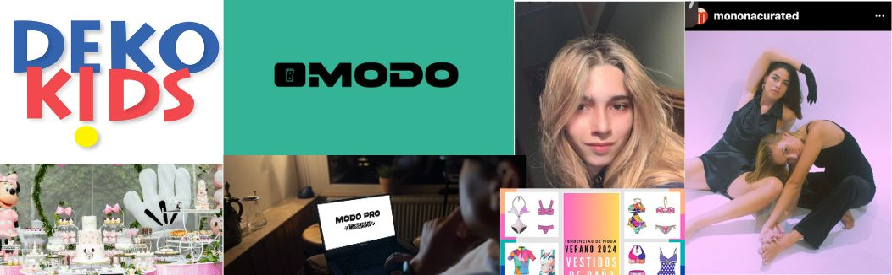

Sobre mi
Mi nombre es Fátima Beatriz Tapia Meyer, tengo 23 años y mi trayectoria es tan diversa como apasionante. Comencé mi viaje académico en la carrera de moda, pero pronto descubrí mi interés por el mundo del marketing y la publicidad, por lo que amplié mis horizontes académicos hacia esa dirección. Actualmente, me desempeño como project manager en Modo, una aplicación de deporte, donde llevo seis meses aportando mi experiencia y pasión por la gestión de proyectos. Antes de esto, tuve la oportunidad de trabajar en marketing en una inmobiliaria durante dos años, adquiriendo valiosos conocimientos en el campo. Además, incursioné en el emprendimiento con mi propia marca, Monona, durante dos años en plena pandemia, demostrando mi capacidad para adaptarme a situaciones desafiantes. Mi compromiso con la industria de la moda también me llevó a participar en el Virtuality Fashion Show, donde contribuí en el área de marketing y logística para el primer desfile de moda virtual en Perú, en colaboración con instituciones reconocidas como Marangoni y Naba. Mi trayectoria refleja mi dedicación, versatilidad y pasión por el mundo del marketing, la moda y la gestión de proyectos.